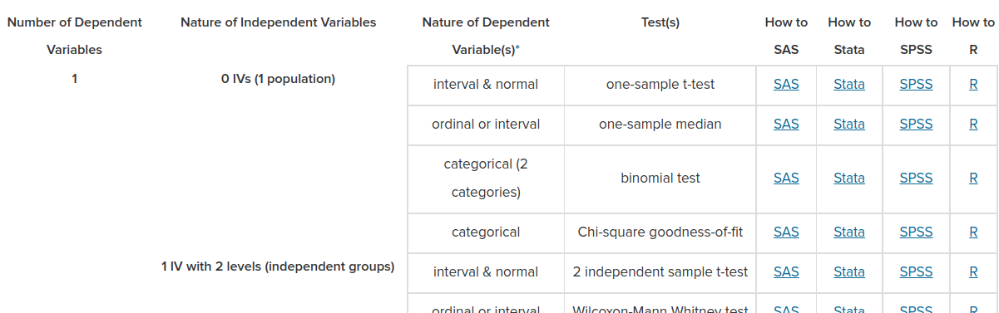

if (!require('afex')) install.packages('afex'); library('afex')
if (!require('correlation')) install.packages('correlation'); library('correlation')
if (!require('corrr')) install.packages('corrr'); library('corrr')
if (!require('cowplot')) install.packages('cowplot'); library('cowplot')
if (!require('dplyr')) install.packages('dplyr'); library('dplyr')
if (!require('gapminder')) install.packages('gapminder'); library('gapminder')
if (!require('ggplot2')) install.packages('ggplot2'); library('ggplot2')
if (!require('ggridges')) install.packages('ggridges'); library('ggridges')
if (!require('gtsummary')) install.packages('gtsummary'); library('gtsummary')
if (!require('haven')) install.packages('haven'); library('haven')
if (!require('inspectdf')) install.packages('inspectdf'); library('inspectdf')
if (!require('knitr')) install.packages('knitr'); library('knitr')
if (!require('lme4')) install.packages('lme4'); library('lme4')
if (!require('papaja')) install.packages("papaja"); library('papaja')
if (!require('parameters')) install.packages('parameters'); library('parameters')
if (!require('performance')) install.packages('performance'); library('performance')
if (!require('report')) install.packages('report'); library('report')
if (!require('sjPlot')) install.packages('sjPlot'); library('sjPlot')
if (!require('tidyr')) install.packages('tidyr'); library('tidyr')6 Análisis de datos inferencial
Paquetes para este capítulo
6.1 Análisis de datos y reporte de resultados
R es un lenguaje creado por estadísicos que ha ido evolucionando hacia un lenguaje de programación completo. No obstante, una de sus fortalezas innegables es el análisis de datos, y el reporte de resultados. En esta sección vamos a ver de manera muy general algunas de las herramientas que tenemos a nuestra disposición.
6.1.1 Tablas
Hay numerosos paquetes para crear tablas descriptivas o para facilitar el reporte de resultados en R:
Mostraremos algunos ejemplos usando gtsummary. Una ventaja interesante es que permite de manera sencilla transformar nuestra tabla a otros formatos.
6.2 Tablas descriptivos
Podemos crear tablas con los descriptivos de nuestros datos usando la función tbl_summary() de {gtsummary}
# Por defecto, usa: mediana (rango inter cuartil)
gapminder %>%
select(-country) %>%
gtsummary::tbl_summary() | Characteristic | N = 1,7041 |
|---|---|
| continent | |
| Africa | 624 (37%) |
| Americas | 300 (18%) |
| Asia | 396 (23%) |
| Europe | 360 (21%) |
| Oceania | 24 (1.4%) |
| year | 1,980 (1,966, 1,993) |
| lifeExp | 61 (48, 71) |
| pop | 7,023,596 (2,793,664, 19,585,222) |
| gdpPercap | 3,532 (1,202, 9,325) |
| 1 n (%); Median (IQR) | |
Usando el parámetro by podemos crear columnas para cada valor de una variable:
# Por continente
gapminder %>%
select(-country) %>%
gtsummary::tbl_summary(by = continent)| Characteristic | Africa, N = 6241 | Americas, N = 3001 | Asia, N = 3961 | Europe, N = 3601 | Oceania, N = 241 |
|---|---|---|---|---|---|
| year | 1,980 (1,966, 1,993) | 1,980 (1,966, 1,993) | 1,980 (1,966, 1,993) | 1,980 (1,966, 1,993) | 1,980 (1,966, 1,993) |
| lifeExp | 48 (42, 54) | 67 (58, 72) | 62 (51, 70) | 72 (70, 75) | 74 (71, 78) |
| pop | 4,579,311 (1,342,075, 10,801,490) | 6,227,510 (2,962,359, 18,340,309) | 14,530,831 (3,844,393, 46,300,348) | 8,551,125 (4,331,500, 21,802,867) | 6,403,492 (3,199,213, 14,351,625) |
| gdpPercap | 1,192 (761, 2,377) | 5,466 (3,428, 7,830) | 2,647 (1,057, 8,549) | 12,082 (7,213, 20,461) | 17,983 (14,142, 22,214) |
| 1 Median (IQR) | |||||
El parámetro statistic nos permite controlar que estadísticos mostrar en función del tipo de variable:
# Usando promedio (desviación estandard)
gapminder %>%
select(-country) %>%
gtsummary::tbl_summary(by = continent,
statistic = list(all_continuous() ~ "{mean} ({sd})",
all_categorical() ~ "{n} / {N} ({p}%)"),
missing = "ifany") %>%
gtsummary::add_n()| Characteristic | N | Africa, N = 6241 | Americas, N = 3001 | Asia, N = 3961 | Europe, N = 3601 | Oceania, N = 241 |
|---|---|---|---|---|---|---|
| year | 1,704 | 1,980 (17) | 1,980 (17) | 1,980 (17) | 1,980 (17) | 1,980 (18) |
| lifeExp | 1,704 | 49 (9) | 65 (9) | 60 (12) | 72 (5) | 74 (4) |
| pop | 1,704 | 9,916,003 (15,490,923) | 24,504,795 (50,979,430) | 77,038,722 (206,885,205) | 17,169,765 (20,519,438) | 8,874,672 (6,506,342) |
| gdpPercap | 1,704 | 2,194 (2,828) | 7,136 (6,397) | 7,902 (14,045) | 14,469 (9,355) | 18,622 (6,359) |
| 1 Mean (SD) | ||||||
Ejercicio - Descriptivos
Usando la base de datos del apartado anterior:
Intenta reproducir la siguiente tabla:
Donde encontrar ayuda
En el manual de gtsummary tienes ejemplos para todo lo que necesitarás. Busca a la función tbl_summary()
Demasiado detalle, solo quiero los promedios
Puedes usartype = list(everything() ~ 'continuous'), dentro de tbl_summary() para forzar el tratamiento de variables con pocos niveles como continuas.
Error al añadir valor p
En la ayuda de la funcion: ?add_p.tbl_summary encontrarás que puedes usar algo como: `add_p(test = everything() ~ “t.test
| Characteristic | N | Resident | p-value2 | |
|---|---|---|---|---|
| 0, N = 541 | 1, N = 1181 | |||
| IDparticipante | 172 | 72 (51) | 93 (48) | 0.012 |
| Screening beliefs | 172 | 27.4 (5.0) | 28.4 (6.8) | 0.3 |
| Comprehension of the evidence | 172 | 2.91 (1.28) | 2.54 (1.16) | 0.077 |
| Numeracy BNT-S | 172 | 3.70 (1.54) | 2.87 (1.56) | 0.001 |
| 1 Mean (SD) | ||||
| 2 Welch Two Sample t-test | ||||
6.3 Tablas resultados inferenciales
Para tablas con los resultados de nuestros modelos estadísticos, usamos la función tbl_regression() de {gtsummary}
Primero preparamos los datos:
# Transform variables
DF_gapminder = gapminder %>%
# Log
mutate(gdpPercap_log = log(gdpPercap),
pop_log = log(pop)
) %>%
# Mean center variables so the 0 values have meaning
mutate(year = year - mean(year, na.rm = TRUE),
gdpPercap_log = gdpPercap_log - mean(gdpPercap_log, na.rm = TRUE),
pop_log = pop_log - mean(pop_log, na.rm = TRUE)) %>%
# Will use only last year
filter(year == max(year))
Creamos un modelo sencillo y mostramos la tabla de resultados.
model1 = lm(lifeExp ~ gdpPercap_log + pop_log, DF_gapminder)
table_model1 = gtsummary::tbl_regression(model1, intercept = TRUE) %>%
add_global_p() %>%
bold_labels() %>%
italicize_levels() %>%
add_glance_table(include = c("nobs", "df.residual", "r.squared", "adj.r.squared"))
table_model1| Characteristic | Beta | 95% CI1 | p-value |
|---|---|---|---|
| (Intercept) | 63 | 62, 65 | |
| gdpPercap_log | 7.2 | 6.4, 8.1 | |
| pop_log | 0.81 | 0.04, 1.6 | 0.039 |
| No. Obs. | 142 | ||
| Residual df | 139 | ||
| R² | 0.665 | ||
| Adjusted R² | 0.660 | ||
| 1 CI = Confidence Interval | |||
6.4 Unir tablas
De manera muy sencilla podemos unir varias tablas:
# Primero creamos un modelo más sencillo, basado en el anterior
model10 = lm(lifeExp ~ gdpPercap_log, DF_gapminder)
# Creamos la tabla
table_model10 = gtsummary::tbl_regression(model10, intercept = TRUE) %>%
add_global_p() %>%
bold_labels() %>%
italicize_levels() %>%
add_glance_table(include = c("nobs", "df.residual", "r.squared", "adj.r.squared"))
# Combinamos ambas tablas
tbl_merge(
tbls = list(table_model10, table_model1),
tab_spanner = c("**Baseline**", "**Step 1**")) %>%
# Necesario para que los parámetros globales de los modelos se muestren al final
modify_table_body(~.x %>% arrange(row_type == "glance_statistic")
)| Characteristic | Baseline | Step 1 | ||||
|---|---|---|---|---|---|---|
| Beta | 95% CI1 | p-value | Beta | 95% CI1 | p-value | |
| (Intercept) | 64 | 62, 65 | 63 | 62, 65 | ||
| gdpPercap_log | 7.2 | 6.3, 8.1 | 7.2 | 6.4, 8.1 | ||
| pop_log | 0.81 | 0.04, 1.6 | 0.039 | |||
| No. Obs. | 142 | 142 | ||||
| Residual df | 140 | 139 | ||||
| R² | 0.654 | 0.665 | ||||
| Adjusted R² | 0.652 | 0.660 | ||||
| 1 CI = Confidence Interval | ||||||
6.5 Reporte de resultados
Con la función report() podemos ver una descripción completa de los resultados de nuestro modelo:
report::report(model1)
#> We fitted a linear model (estimated using OLS) to predict lifeExp with
#> gdpPercap_log and pop_log (formula: lifeExp ~ gdpPercap_log + pop_log). The
#> model explains a statistically significant and substantial proportion of
#> variance (R2 = 0.66, F(2, 139) = 137.93, p < .001, adj. R2 = 0.66). The
#> model's intercept, corresponding to gdpPercap_log = 0 and pop_log = 0, is at
#> 63.28 (95% CI [61.98, 64.58], t(139) = 96.30, p < .001). Within this model:
#>
#> - The effect of gdpPercap log is statistically significant and positive
#> (beta = 7.24, 95% CI [6.38, 8.11], t(139) = 16.56, p < .001; Std. beta =
#> 0.81, 95% CI [0.72, 0.91])
#> - The effect of pop log is statistically significant and positive (beta =
#> 0.81, 95% CI [0.04, 1.58], t(139) = 2.09, p = 0.039; Std. beta = 0.10, 95%
#> CI [5.35e-03, 0.20])
#>
#> Standardized parameters were obtained by fitting the model on a standardized
#> version of the dataset. 95% Confidence Intervals (CIs) and p-values were
#> computed using a Wald t-distribution approximation.6.6 Texto inline
Algo genial de gtsummary, es que podemos usar las propias tablas para extraer detalles de los resultados y usarlos directamente en el texto.
El paquete report tiene también funcionalidades muy potentes que merece la pena explorar.
La ventaja de escribir los resultados de esta manera es que si hacemos algun pequeño cambio en la preparación de datos, podemos volver a correr el script de generación del reporte de resultados, y los valores p, etc. se ajustarán automáticamente. Únicamente tenemos que asegurarnos que la interpretación cualitativa no cambia :)
paste0("Life expectancy was significantly associated with GDP per capita (log), beta = ",
gtsummary::inline_text(table_model1, variable = gdpPercap_log))
#> [1] "Life expectancy was significantly associated with GDP per capita (log), beta = 7.2 (95% CI 6.4, 8.1; p<0.001)"Ejercicio - Resultados inferenciales
Usando la misma base de datos del ejercicio anterior:
Haz una regresión lineal preciciendo compresion a partir de las variables de la base.
Finalmente, crea una tabla para reportar los resultados de tu análisis, como la siguiente:
Donde encontrar ayuda
En el manual de gtsummary tienes ejemplos para todo lo que necesitarás. tbl_regression() es tu amiga.
Como añadir información en el pie de la tabla
Tendrás que usar la funciónadd_glance_source_note() o add_glance_table(). Para saber que nombres poner en el paràmetro include, puedes usar la función broom::glance(model)
| Characteristic | Beta | 95% CI1 | p-value |
|---|---|---|---|
| (Intercept) | 2.8 | 1.9, 3.8 | |
| Resident | -0.23 | -0.62, 0.17 | 0.3 |
| Screening beliefs | -0.02 | -0.05, 0.01 | 0.2 |
| Numeracy BNT-S | 0.14 | 0.03, 0.26 | 0.016 |
| No. Obs. = 172; Adjusted R² = 0.047; Residual df = 168; Statistic = 3.83; p-value = 0.011; df = 3 | |||
| 1 CI = Confidence Interval | |||
6.7 Otros análisis y sus tablas
Que test estadístico debería usar, con código en R

6.7.1 Correlación simple
# Data
iris %>% as_tibble()
#> # A tibble: 150 × 5
#> Sepal.Length Sepal.Width Petal.Length Petal.Width Species
#> <dbl> <dbl> <dbl> <dbl> <fct>
#> 1 5.1 3.5 1.4 0.2 setosa
#> 2 4.9 3 1.4 0.2 setosa
#> 3 4.7 3.2 1.3 0.2 setosa
#> 4 4.6 3.1 1.5 0.2 setosa
#> 5 5 3.6 1.4 0.2 setosa
#> 6 5.4 3.9 1.7 0.4 setosa
#> # ℹ 144 more rows
# Test
simple_corr_test = cor.test(iris$Sepal.Width, iris$Sepal.Length, method = "spearman")
# Report
simple_corr_test %>% report::report()
#> Effect sizes were labelled following Funder's (2019) recommendations.
#>
#> The Spearman's rank correlation rho between iris$Sepal.Width and
#> iris$Sepal.Length is negative, statistically significant, and small (rho =
#> -0.17, S = 6.56e+05, p = 0.041)6.7.2 Multiples correlaciones
# Multiple correlations
table_correlations = iris %>%
correlation(partial = FALSE, method = "spearman")
# Print table
TABLE_CORR = table_correlations %>%
summary(stars = FALSE, include_significance = TRUE, p_digits = 3)
# Fancy table
TABLE_CORR %>%
parameters::print_md()| Parameter | Petal.Width | Petal.Length | Sepal.Width |
|---|---|---|---|
| Sepal.Length | 0.83 (p < .001) | 0.88 (p < .001) | -0.17 (p = 0.041) |
| Sepal.Width | -0.29 (p < .001) | -0.31 (p < .001) | |
| Petal.Length | 0.94 (p < .001) |
p-value adjustment method: Holm (1979)
6.7.3 Anova
- Ver paquete {afex}
data(obk.long, package = "afex")
head(obk.long)
#> id treatment gender age phase hour value
#> 1 1 control M -4.75 pre 1 1
#> 2 1 control M -4.75 pre 2 2
#> 3 1 control M -4.75 pre 3 4
#> 4 1 control M -4.75 pre 4 2
#> 5 1 control M -4.75 pre 5 1
#> 6 1 control M -4.75 post 1 3
# estimate mixed ANOVA on the full design:
model = afex::aov_ez(id = "id",
dv = "value",
data = obk.long, between = c("treatment"),
within = c("phase", "hour"))
table_afex = papaja::apa_print(model)$table
knitr::kable(table_afex)| term | estimate | conf.int | statistic | df | df.residual | p.value |
|---|---|---|---|---|---|---|
| Treatment | .211 | [.000, .468] | 2.91 | 2 | 13 | .090 |
| Phase | .164 | [.000, .356] | 19.29 | 1.74 | 22.64 | < .001 |
| Hour | .129 | [.000, .237] | 18.44 | 1.95 | 25.41 | < .001 |
| Treatment \(\times\) Phase | .099 | [.000, .212] | 5.43 | 3.48 | 22.64 | .004 |
| Treatment \(\times\) Hour | .001 | [.000, .000] | 0.08 | 3.91 | 25.41 | .987 |
| Phase \(\times\) Hour | .017 | [.000, .000] | 1.35 | 4.02 | 52.29 | .265 |
| Treatment \(\times\) Phase \(\times\) Hour | .008 | [.000, .000] | 0.33 | 8.05 | 52.29 | .951 |
6.7.4 Modelos mixtos
Primero preparamos los datos:
# Transform variables
DF_gapminder2 = gapminder %>%
# Log
mutate(gdpPercap_log = log(gdpPercap),
pop_log = log(pop)
) %>%
# Mean center variables so the 0 values have meaning
mutate(year = year - mean(year, na.rm = TRUE),
gdpPercap_log = gdpPercap_log - mean(gdpPercap_log, na.rm = TRUE),
pop_log = pop_log - mean(pop_log, na.rm = TRUE))
# Reference levels and contrast coding
DF_gapminder2 <- within(DF_gapminder2, continent <- relevel(continent, ref = "Oceania"))
contrasts(DF_gapminder2$continent) = car::contr.Sum(levels(DF_gapminder2$continent))Creamos un modelo sencillo:
Y mostramos la tabla de resultados. Como se trata de modelos mixtos, tenemos que añadir manualmente los R2’s.
table_model2 = gtsummary::tbl_regression(model2, intercept = TRUE) %>%
add_global_p() %>%
bold_labels() %>%
italicize_levels() %>%
add_glance_source_note(include = c("nobs", "df.residual"))
# broomExtra::glance_performance(model2)
table_model2 | Characteristic | Beta | 95% CI1 | p-value |
|---|---|---|---|
| (Intercept) | 59 | 58, 61 | |
| gdpPercap_log | 3.3 | 2.8, 3.8 | |
| pop_log | 6.1 | 5.4, 6.9 | |
| year | 0.15 | 0.13, 0.17 | |
| No. Obs. = 1,704; Residual df = 1,698 | |||
| 1 CI = Confidence Interval | |||
# as_gt() %>%
# gt::tab_source_note(
# gt::md(paste0(deparse1(model2@call$formula), "<BR> ", "R2 conditional = ", round(R2_1$R2_conditional, 3), ", R2 marginal = ", round(R2_1$R2_marginal, 3))))Bibliografía
Wickham, H., & Grolemund, G. (2016). R for data science: import, tidy, transform, visualize, and model data. O’Reilly Media, Inc. https://r4ds.had.co.nz/